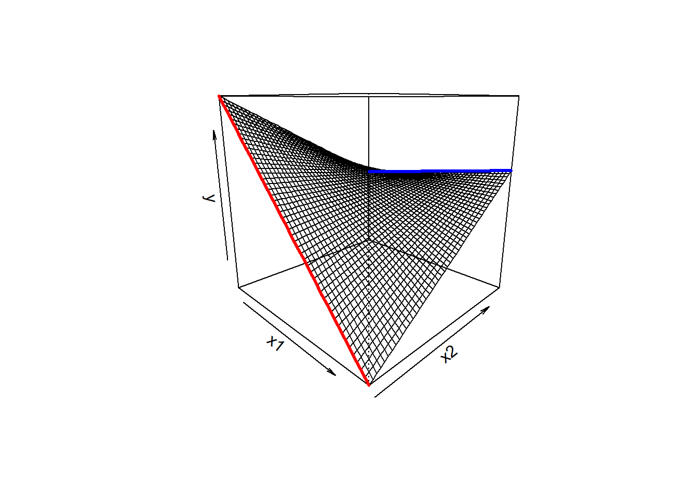
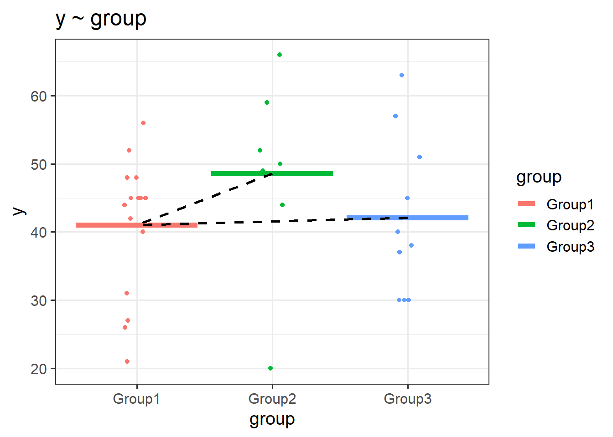
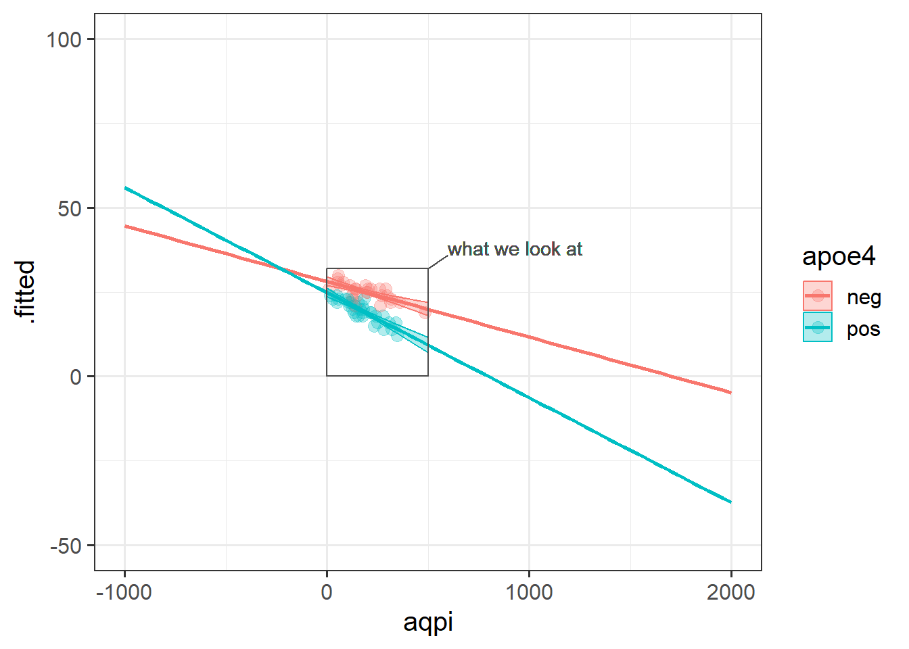
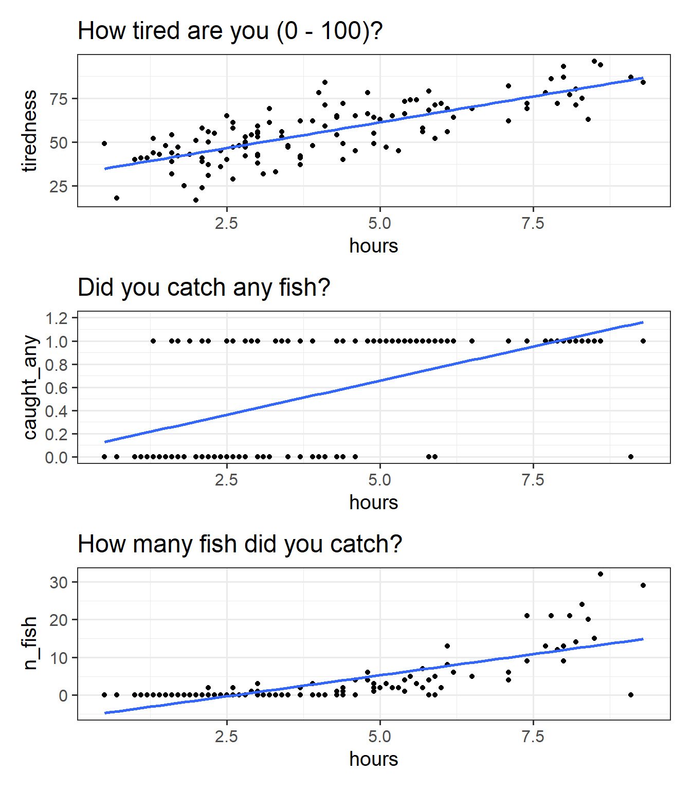
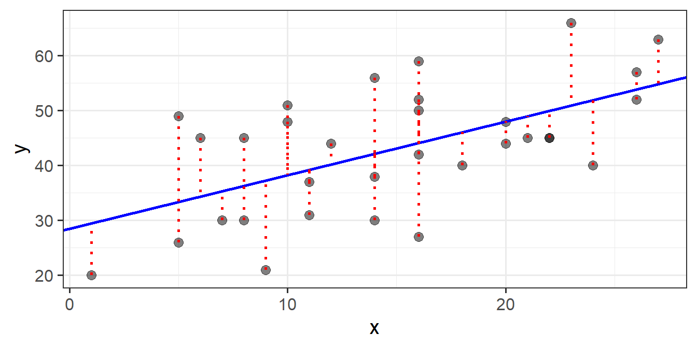
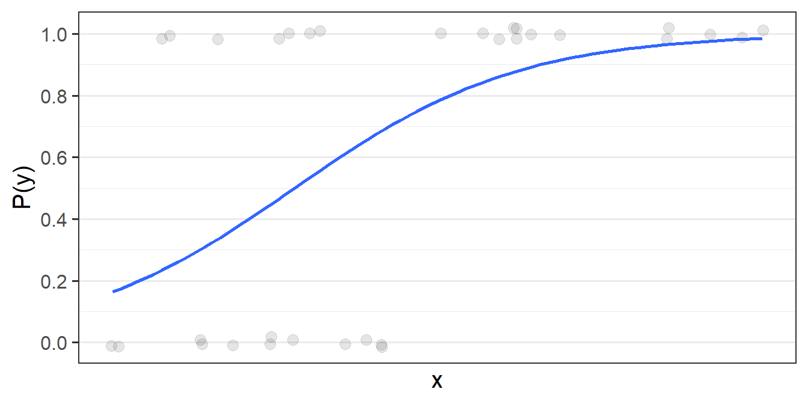
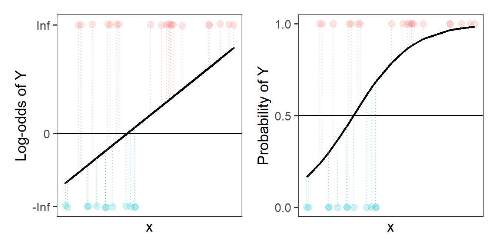
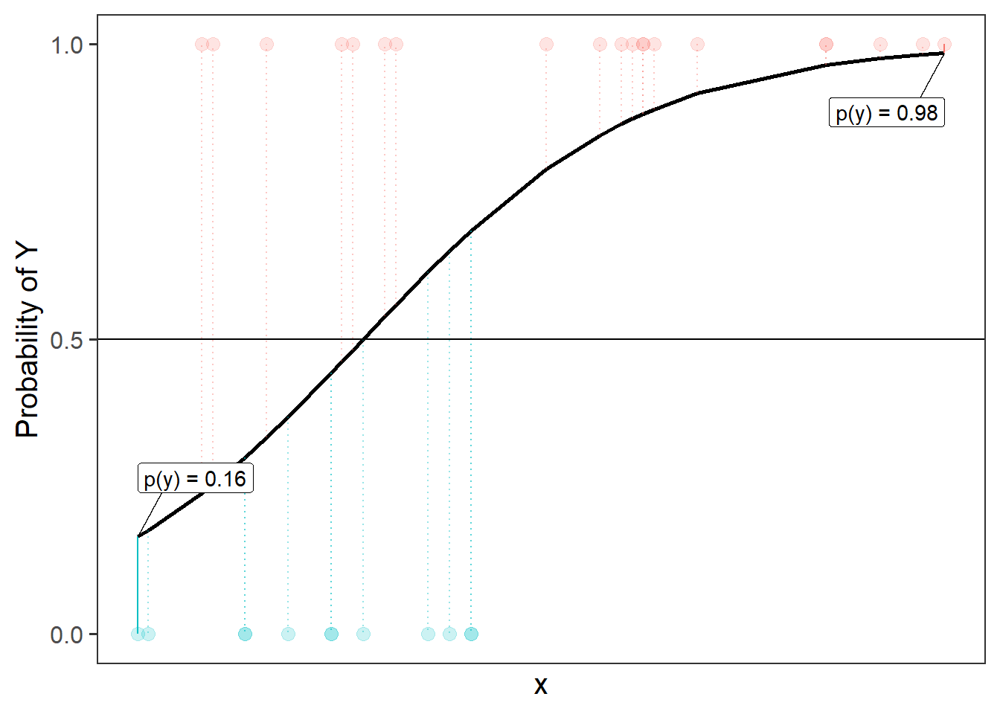
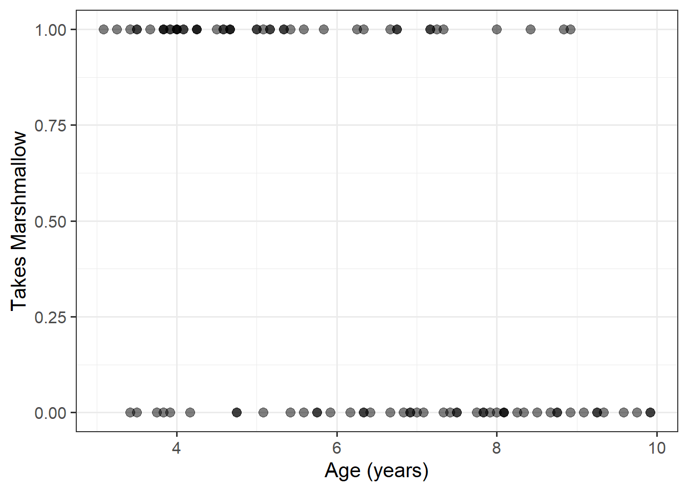

10A: The Generalized Linear Model
Quick recaps
Things have moved pretty quickly in the last couple of readings, so it’s worth taking a little bit of time on recaps to see how it all fits together.
Simple linear regression
In the simple linear regression, we were modelling a continuous outcome variable \(y\) as a function of some predictor \(x\).
Our model of \(y\) was defined by a number of components:
- \(b_0\): the “Intercept”. This is the predicted value of \(y\) where \(x = 0\). In the plot below, it is where the regression line cuts the y-axis.
- \(b_1\): the “Coefficient for \(x\)”. This is the predicted increase in \(y\) for every unit increase of \(x\). In the plot below, this is the amount the regression line goes up for every one unit we move across.
- \(\varepsilon\): the “Residuals” or “Error term”. These are the distances from each of our observed values to the model predicted values. In the plot below, these are the vertical distances from each red dot to the black line. The standard deviation of all these gets denoted \(\sigma_\varepsilon\).
Model:
\[ \begin{align} y &= b_0 + b_1 \cdot x_1 + \varepsilon\\ \qquad \\ &\varepsilon \sim N(0, \sigma_\varepsilon) \end{align} \]
In R:lm(y ~ x1, data = mydata)
Multiple linear regression
When we extended this to multiple regression, we essentially just added more explanatory variables (more ‘predictors’ of the outcome \(y\)).
In these models, the values of \(y\) are now modelled as a set of relationship with more than just one \(x\) variable. So our models are defined by more coefficients.
- \(b_0\): the “Intercept”. This is the predicted value of \(y\) when all predictors are zero.
- \(b_1\): the “Coefficient for \(x_1\)”. This is the predicted increase in \(y\) for every unit increase of \(x_1\) holding constant all other predictors.
- …
- …
- \(b_p\): the “Coefficient for \(x_p\)”. This is the predicted increase in \(y\) for every unit increase of \(x_p\) holding constant all other predictors.
- \(\varepsilon\): the “Residuals” or “Error term”. These are the distances from each of our observed values to the model predicted values. The standard deviation of all these gets denoted \(\sigma_\varepsilon\).
Model:
\[
\begin{align}
y &= b_0 + b_1 \cdot x_1 + b_2 \cdot x_2 \,\, ... \,\, + b_p \cdot x_p + \varepsilon\\
\qquad \\
&\varepsilon \sim N(0, \sigma_\varepsilon)
\end{align}
\]
lm(y ~ x1 + x2 ... + xp, data = mydata)In the plot below with two predictors, we would have a coefficient for each one, showing the slope of the regression surface along each dimension. The residuals continue to be the distances from the observed values to our model predicted values, so in this they are the vertical distances from each red dot to the surface.
Interactions
We then saw how we can let the relationships between the outcome \(y\) and an explanatory variable \(x1\) vary as a function of some other explanatory variable \(x2\).
In the plot below, if someone asks you “what is the relationship between \(x_1\) and \(y\), your reply should (hopefully) be”it depends on what the value of \(x_2\) is”
As we can see from the plot, for low values of \(x_2\), there is a steep downward slope between \(y\) and \(x_1\) (the red line in the plot). For high values of \(x_2\), the slope between \(y\) and \(x_1\) is much flatter (the blue line).

We can capture this by using an additional coefficient in our linear model. To express an interaction, we use the product of the two predictors (\(x_1 \cdot x_2\)).
Model:
\[
\begin{align}
y &= b_0 + b_1 \cdot x_1 + b_2 \cdot x_2 + b_3 \cdot x_1 \cdot x_2 + \,\, ... \,\, + b_p \cdot x_p + \varepsilon\\
\qquad \\
&\varepsilon \sim N(0, \sigma_\varepsilon)
\end{align}
\]
lm(y ~ x1 + x2 + x1:x2 + ..., data = mydata)
OR
lm(y ~ x1*x2 + ..., data = mydata) The resulting coefficients (\(b_1\), \(b_2\) and \(b_3\) in the equation above) provide us with:
- the association between \(x_1\) and \(y\) when \(x_2 = 0\)
- the association between \(x2\) and \(y\) when \(x_1 = 0\)
- the amount to which 1. and 2. are adjusted when there is an increase in the other variable
Categorical explanatory variables
Throughout the models we’ve been fitting we have also seen how they behave with categorical predictors.
When we enter a categorical variable in as a predictor in a linear model, it gets entered as a set of “dummy variables” (typically zeroes or ones, but we it is possible to do more clever things). These represent differences between groups.
If we had a categorical variable which contained \(k\) levels (or “groups”, or “categories”), then R will put \(k-1\) variables into the model for us, and we will get out \(k-1\) coefficients. The default behaviour in R is that, depending on what we set as our reference level, the coefficients represent the difference from this level to each of the other levels.
In the plots below, if “Group1” is the reference, then the coefficient groupGroup2 would represent the vertical distance from the red line to the green line, and the coefficient groupGroup3 would be the vertical distance from the red line to the blue line.

Note - because categorical predictors is all looking at the difference between groups - this is all still intrinsically “linear” - the only possible way to get from the red line to the green line is via a straight line.
We also saw how this same logic applies when categorical explanatory variables are involved in an interaction - e.g., a binary (two-level) predictor interacting with a continuous predictor allows two lines to be different slopes (as in Figure 5).
Continuous outcomes!
In all of the models thus far, we have been dealing with outcomes variables that are continuous. These are variables for which an observation can take any real value - i.e. 3.4, or 1.50365, or 0.000532. We might not have have measured these variables with any degree of accuracy, but the models we have been fitting have fundamentally assumed this.
For instance, even if our outcome is a score on some neuropsychological test of cognition where we can only score whole numbers, our model predictions will be values that are much more specific. A model predicted score on the test could be 18.220483724…… This is because we are modelling a continuous line through the observed scores. This also means that the model extends to scores from negative to positive infinity (\(- \infty < y < \infty\)), even if we know that people can’t score less than 0 or more than 30 (see Figure 6 ).
Often, this is a perfectly acceptable thing to do, especially when we consider the outcome variable to be measuring a continuous thing (e.g. cognitive functioning), just hindered by the precision of measurement, and when the bounds of our measurement tool are not preventing us from capturing variation (e.g. if everyone scores maximum on the test, then there is no variance to explain).

Other outcomes
There are lots of variables that we collect that don’t fit with this way of thinking. For instance, what if we want to model something that takes the form of a binary variable:1
- being Y vs not being Y
- Y happening vs Y not happening
For binary variables, values can only take one of two values, which we often encode as 0 or 1. Values can’t be 0.5, -2, or 1.3, they can only be 0 or 1.
Another type of outcome that we can’t really model as continuous is a count variable:
- The number of Y’s
- How many times Y happened
For count data, values can’t take any real number, they can only take integers (0, 1, 2, 3, …).
An example
At a lake, I survey 120 people who have just finished fishing for the day. I’m interested in how the length of time they spent fishing is associated with:
- how tired they are from 0 to 100 (continuous)
- catching any fish (binary, 1 = yes, 0 = no)
- the number of fish caught (count)
We can try at first to visualise all these relationships as scatterplots (Figure 7).
Code
fish <- read_csv("https://uoepsy.github.io/data/fishing_exped.csv")
p1 <- ggplot(fish, aes(x = hours, y = tiredness)) +
geom_point() +
labs(title="How tired are you (0 - 100)?") +
geom_smooth(method=lm, se=FALSE)
p2 <- ggplot(fish, aes(x = hours, y = caught_any)) +
geom_point() +
labs(title="Did you catch any fish?") +
geom_smooth(method=lm, se=FALSE) +
scale_y_continuous(limits=c(0,1.2),breaks=seq(0,1.2,.2))
p3 <- ggplot(fish, aes(x = hours, y = n_fish)) +
geom_point() +
labs(title="How many fish did you catch?") +
geom_smooth(method=lm, se=FALSE)
p1 / p2 / p3

We can happily model our first outcome, tiredness, with a linear model. In Figure 7 (top panel), we can see that the relationship looks linear, and the residuals are spread fairly consistently above and below the fitted line.
For the binary outcome however Figure 7 (middle panel), there are a couple of things that are problematic. For someone who spends 8 hours fishing, the model estimates approximately 1.1 “catching any fish”. But what does that 1.1 really mean? Does it mean that if I fish 8 hours I will have 1.1 fish? no, because it’s not a count. Does it mean there is a 110% probability of catching fish? This is closer, but again it doesn’t make much sense - how can we have a probability of 110%?
For the count variable (bottom panel), we can also see that the standard linear model looks problematic. Again it estimates values we simply cannot have (it looks like if I spend 1 hour fishing I will catch about negative 3 fish?). Another thing to note is that the variance in the points on the y axis tends to increase as we get higher. This is typical of count data - we’re going to see lots of people catching 0, 1 or 2 fish, and so the “people catching few fish” are all quite close (in number of fish) to one another, but because fewer people catch 20 fish, 30 fish etc, there is a lot more variability in “number of fish” when we get higher up. This is a problem for a linear model, which assumes constant variance across the fitted model.
Introducing the GLM
To deal with these sorts of outcome variable, we need to learn about the Generalized Linear Model (GLM).
The GLM involves a little bit of trickery, in which we translate something that is inherently not linear (e.g. “the probability of Y”, or for count variables “the rate of occurrence of Y”) into something which is both linear and unbounded, and model that thing instead.
The problem, fundamentally, is that things like probability is not linear. We think of it as getting ever and ever closer, but never reaching, 0 and 1. For instance, if the probability of \(y\) ocurring increases with \(x\), it makes most sense to think of it looking something like Figure 8.
To allow us to use our linear toolbox for things like “probability”, we can’t think in terms of modelling how \(x\) is associated with the the probability of \(y\) directly (because we only ever observe \(y\) as 0 or 1). What we do instead is model how \(x\) is associated with the “log-odds of \(y\)”.
We use a similar trick for modelling an outcome that is a count - instead of modelling counts directly, we can model the log of the counts.
Probability, odds, and log-odds
If we let \(p\) denote the probability of a given event, then \(\frac{p}{(1-p)}\) are the odds of the event happening.
For example, the odds of rolling a 6 with a normal die is 1/5 (sometimes this is expressed ‘1:5’, and in gambling the order is sometimes flipped and you’ll see ‘5/1’ or ‘odds of five to one’).
The “log-odds” (sometimes called “logits”) are denoted by \(ln(\frac{p}{(1-p)})\), where \(ln\) refers to the “natural logarithm”. Don’t worry about exactly what \(ln\) means - the important thing is that it converts “odds” (which can go from 0 to infinity but do not increase linearly) in to a straight line (Figure 9).
optional: what are logarithms?
Essentials of logarithms
A logarithm is a mathematical way to write any positive number as a power of a “base number”.
Log base 10
Consider the base number 10. The R function implementing the logarithm base 10 is log10().
To what power do I need to raise the base number 10 in order to obtain the desired number 100?
log10(100)[1] 2log10(100) = 2 as we need to raise 10 to the power of 2 in order to obtain the desired number 100.
To what power do I need to raise the base number 10 in order to obtain the desired number 1000?
log10(1000)[1] 3log10(1000) = 3 as we need to raise 10 to the power of 3 in order to obtain the desired number 1000.
Note that you can use this to write any desired number as a power of 10. For example, to which power do we raise 10 in order to obtain 13.5?
log10(13.5)[1] 1.130334So this is telling us that \(10^{1.130334} = 13.5\) (with rounding error)
10^1.130334[1] 13.50001An important property is that:
\[10^{\log_{10}(x)} = x\]
For example, \(10^{\log_{10}(100)} = 10^{2} = 100\).
10^log10(100)[1] 100Natural Logarithms (aka Log base e)
A special number in mathematics is Euler’s (or Napier’s) number \(e = 2.718282...\). As well as a logarithm in base 10, telling us which power to raise the base 10 to, in order to obtain a desired number, we can also use any other base, such as \(e\).
The logarithm with base number \(e\) is implemented in the R function log().
To which number do I need to raise \(e\) in order to obtain 8?
log(8)[1] 2.079442So this is telling us that \(e^{2.079442} = 8\)
2.718282^2.079442[1] 8.000005Our property is preserved: \[e^{\log(x)} = x\]
2.718282^log(8)[1] 8.000001
Conversions
Between probabilities, odds and log-odds (“logit”):
\[\begin{align} &\text{for probability p of Y for observation i:}\\ \qquad \\ odds_i & = \frac{p_i}{1-p_i} \\ \qquad \\ logit_i &= ln(odds_i) = ln(\frac{p_i}{1-p_i}) \\ \qquad \\ p_i & = \frac{odds_i}{1 + odds_i} = \frac{e^{logit_i}}{(1+e^{logit_i})} \end{align}\]
Counts and log-counts
We can apply the same log transformation to count data in order to think about how we might consider an association on a linear scale:

This little trick of modelling something via a mapping from the outcome variable to the model (i.e. logit, or log) is what underpins the generalized linear model. It allows us to be able to talk about linear associations between predictors and the log-odds of an event (or between predictors and log-counts). In Figure 9, and Figure 10 above, we can see that by talking in terms of log-odds (or log-counts), we can model something that is linear and unbounded. So when we think about these models, what we are really have in mind is that we are capturing the associations seen in the right hand plots of Figure 9 and Figure 10.
As we will see below we can even convert our coefficients into something at least a little more interpretable than “log-odds” (but doing so comes at the expense of losing the ‘linearity’ of the association).
The Generalized Linear Model (GLM)
In its general form, the GLM looks pretty similar to the standard LM.
we can write it as:
\[ \color{green}{g(}\color{red}{y}\color{green}{)} = \mathbf{\color{blue}{b_0 + b_1 \cdot x_1 + ... + b_p \cdot x_p} } \] The difference is that \(\color{green}{g()}\) is a function (like log, or logit) that links the expected value of \(\color{red}{y}\) to the linear prediction of \(\color{blue}{b_0 + b_1 \cdot x_1 + ... + b_p \cdot x_k}\).
Fitting GLM in R
In order to fit these models in R, we need to use the glm() function. This is (unsurprisingly) a generalized form of the lm() function we have already been using. The only difference is that we need to also tell the function the family of the outcome variable, and the “link function” (the mapping we use to get from the thing we want to model to the thing we actually model, e.g. "log", or "logit").
Linear Regression
Outcome \(y\) is continuous, \(y \in (-\infty, \infty)\)
\[ \color{red}{y} = \mathbf{\color{blue}{b_0 + b_1 \cdot x_1 + ... + b_p \cdot x_p}} \]
linear_model <- lm(continuous_y ~ 1 + x1 + ... + xp, data = df)As it happens, lm() is just a special case of glm(), where we use the “gaussian” family (Gaussian is another term for ‘normal’), with the “identity” link function (the identity function is just saying ‘model y directly’):
glm(continuous_y ~ 1 + x1 + ... + xp, data = df,
family = gaussian(link = "identity"))Logistic Regression
Outcome \(y\) is binary, \(y \in [0,1]\)
\[
\begin{align}
\color{red}{ln \left( \frac{p}{1-p} \right) } &= \mathbf{\color{blue}{b_0 + b_1 \cdot x_1 + ... + b_p \cdot x_p}} \\
\qquad \\
\text{where } \color{red}{p} &= \text{probability of event }y\\
\end{align}
\]
logistic_model <- glm(binary_y ~ 1 + x1 + ... + xp, data = df,
family=binomial(link="logit"))- just putting
family = binomialandfamily = "binomial"will also work (and they will by default use the “logit” link).
- the outcome can either be 0s and 1s, or coded as a factor with 2 levels.
optional: binomial? binary?
We’ve seen the “binomial” distribution before (think “number of heads in 20 coin-flips” in Lecture 4!).
The binomial distribution can be used to model the number of successes in a sequence of \(n\) independent trials. If we have a binary variable, this is a special case of the binomial, where \(n = 1\).
The binomial logistic regression model, more generally, can be written as:
\[ \begin{align} \color{red}{ln \left( \frac{p}{1-p} \right) } &= \mathbf{\color{blue}{b_0 + b_1 \cdot x_1 + ... + b_p \cdot x_p}} \\ \qquad \\ \text{where } Y &\sim Binomial(n, \color{red}{p})\\ \end{align} \]
We can fit a more general binomial logistic regression model with any \(n\) by specifying our outcome in terms of two things: the number of successes and the number of failures.
This can be useful if, for instance, we have an outcome that is something like “the number of correct responses from a set of 20 questions”:
particpant nr_correct nr_incorrect x1 x2
1 ppt1 17 3 ... ...
2 ppt2 14 6 ... ...
3 ppt3 11 9 ... ...
4 ppt4 16 4 ... ...
5 ... ... ... ... ...We can fit a model with this using cbind() to combine the two columns that together represent the outcome:
glm(cbind(nr_correct, nr_incorrect) ~ x1 + ... + xp, data = df,
family=binomial(link="logit"))Poisson Regression
Outcome \(y\) is positive \(y \in (0, \infty)\) \[
\color{red}{ln (y) } = \mathbf{\color{blue}{b_0 + b_1(x_1) + ... + b_k(x_k)}}
\]
poisson_model <- glm(count_y ~ 1 + x1 + ... xk, data = df,
family=poisson(link="log"))family = poissonandfamily = "poisson"will also work
optional: model estimation
For a linear regression model, R has been fitting our regression models by “minimising the residual sums of squares” (i.e., we rotate the line to find the point at which \(\sum{(y - \hat{y})^2}\) is smallest. This gave us the “best fitting line” (Figure 11).

For the generalized linear models we can’t do this. For instance, in logistic regression model, what we’re really wanting is the “best fitting squiggle” (Figure 12), and to get to this we must do something else other than looking at our residuals \(y - \hat{y}\).

Remember that the model is that we are actually fitting is a “logistic model” - i.e. we are fitting things with respect to “log-odds”.
But for our actual observations, the event has either happened or it hasn’t, so our observed values \(y_i\) aren’t really “probabilities” which we can translate into log-odds. In fact, our observed values of 0 and 1, when translated into log odds, become -Infinity and +Infinity (attempted visual in Figure 13). This would mean our residuals would also all be infinity, and so it becomes impossible to work out anything!
# A tibble: 3 × 3
observed odds log_odds
<chr> <chr> <chr>
1 0 0 -Inf
2 1 Inf Inf
3 ... ... ... Instead, maximum likelihood estimation is used to find the set of coefficients which best reproduce the observed data. To do this, the computer considers loads of different lines, trying to converge on the one which maximises the probability of observing the data that we have.
To understand this a bit better, let’s take consider one possible line in the probability world. The left-hand plot of Figure 14 is the same line as the one shown in Figure 13, and we can see it translated back into probabilities in the right-hand plot, so that we have a predicted probability of the outcome for each datapoint. From the right-hand plot, we can then ask “what is the probability of seeing our data, given this line?”. To get this, we multiply up all the probabilities that observed 1s are predicted as 1s and that observed 0s predicted as 0s.

As an example Figure 15 shows the predicted probabilities for a couple of datapoints. The furthest left point is an observed 0, and so the probability of seeing this datapoint (according to the line we’ve drawn) is 1-0.16, or 0.84. The furthest right is an observed 1, so according to our line, the probability of seeing this datapoint as a 1 is 0.98. This means the probability of seeing those two datapoints, given the line we have, is 0.98 * 0.84. But what we want is the probability of seeing all our data, given this line, so we need to do this for all of our datapoints.2 Once we have this, we can compare the probability of seeing all our data for this line, and for a different candidate line, and for a whole range of different lines.

The cool thing is that computers do all this for us. Maximum likelihood estimation (MLE) is just a method to find out which parameters maximise the probability of seeing our data. MLE can be used for all sorts of models, but in the context of a logistic regression, we use it to find the values of coefficients \(b_0\) and \(b_1\) in our model \(\color{red}{ln\left(\frac{p}{1-p} \right)} = \color{blue}{b_0 \cdot{} 1 + b_1 \cdot{} x_1 }\) that have the maximum likelihood of reproducing the data that we have observed.
Marshmallows
Let’s suppose we conduct an experiment in which we replicate the Stanford Marshmallow Experiment. 100 children took part, ranging from ages 3 to 10 years old. Each child was shown a marshmallow, and it was explained that they were about to be left alone for 10 minutes. They were told that they were welcome to eat the marshmallow while they were waiting, but if the marshmallow was still there after 10 minutes, they would be rewarded with two marshmallows.
We’re interested in how the ability to wait to obtain something that one wants develops with age (which was measured in months, but we have converted it to years).
Our outcome variable here is “whether or not the child takes the marshmallow”, and we have one continuous predictor (age).
Here is our data:
mallow <- read_csv("https://uoepsy.github.io/data/mallow.csv")
ggplot(mallow, aes(x=age, y=taken))+
geom_point(alpha=.5, size=3)+
labs(x="Age (years)", y = "Takes Marshmallow")
Practically speaking, fitting our logistic regression model is very straightforward, and the summary output looks fairly similar. We can also easily compare models in a similar (but not identical) way as we have done with linear models. The differences come in when we interpreting the coefficients from these models, and how we compare models to one another.
mallowmod <- glm(taken ~ age, data = mallow,
family=binomial)Comparing models
As we have seen with our linear regression models, we can examine whether certain variables (or sets of variables collectively) are useful in explaining our outcome variable, by comparing a model with a simpler “restricted” model without those variables.
For linear regression models, this involved examining the ‘reduction in residual sums of squares’, which resulted in an \(F\) statistic.
In the generalized linear model world, we don’t have straightforward residuals, and we compare models on a different metric, known as deviance. With a big enough sample size, reductions in deviance are \(\chi^2\) distributed, meaning that we can compare them to an appropriate \(\chi^2\) distribution to compute a p-value.
For instance, we can compare our model to the null model (i.e. just an intercept):
In R we do this comparison as follows:
mallowmod0 <- glm(taken ~ 1, data = mallow, family=binomial)
mallowmod1 <- glm(taken ~ age, data = mallow, family=binomial)
anova(mallowmod0, mallowmod1, test = 'Chisq')Analysis of Deviance Table
Model 1: taken ~ 1
Model 2: taken ~ age
Resid. Df Resid. Dev Df Deviance Pr(>Chi)
1 99 138.59
2 98 111.21 1 27.377 1.674e-07 ***
---
Signif. codes: 0 '***' 0.001 '**' 0.01 '*' 0.05 '.' 0.1 ' ' 1The output shows the two fitted models, and reports the Residual Deviance of each model, 138.6 and 111.2 respectively. So by adding the predictor age to the model, we reduce our deviance from 138.6 to 111.2, i.e. we reduce it by 27.4 (remember, deviance is like badness-of-fit, so smaller is better).
Is this reduction big enough to be more than just due to random sampling variation? This is what the chi-squared test tells us!
The Pr(>Chi) column is our \(p\)-value. It tells us that if in the population the predictor age were unrelated to taking the marshmallow, it would be very unlikely to see a reduction in deviance as big as or bigger than the one we have seen.
What is deviance?
Deviance is a measure of deviation/discrepancy/mismatch between the data and the model. You can think of it as a generalisation of the terms making up the residual sum of squares in simple linear regression, in that it measures the misfit, or badness of fit. This means (as it was for the residual sum of squares) that smaller deviance is better!
More technically, deviance is calculated as -2 times the log-likelihood.
- Likelihood = \(P(data | model)\) (the probability of seeing the sample data, given our model parameters). If we had a perfect model, this would be 1.
- if you want a (slightly) more in depth look at “likelihood”, see here.
- Log-likelihood = the log of the likelihood. The log transformation means that where likelihood ranges from 0 to 1, log-likelihood ranges from negative infinity to 0 (0 would be the perfect model)
- -2Log-likelihood = turns it from negative to positive, and allows us to test it against a \(\chi^2\) distribution.
optional: Akaike and Bayesian Information Criteria
Deviance measures lack of fit, and it can be reduced to zero by making the model more and more complex, effectively estimating the value at each single data point.
However, this involves adding more and more predictors, which makes the model more complex (and less interpretable).
Typically, simpler models are preferred when they still explain the data almost as well. This is why information criteria were devised, exactly to account for both the model misfit but also its complexity.
\[ \text{Information Criterion} = \text{Deviance} + \text{Penalty for model complexity} \]
Depending on the chosen penalty, you get different criteria. Two common ones are the Akaike and Bayesian Information Criteria, AIC and BIC respectively: \[ \begin{aligned} \text{AIC} &= \text{Deviance} + 2 p \\ \text{BIC} &= \text{Deviance} + p \log(n) \end{aligned} \]
where \(n\) is the sample size and \(p\) is the number of coefficients in the model. Models that produce smaller values of these fitting criteria should be preferred.
AIC and BIC differ in their degrees of penalization for number of regression coefficients, with BIC usually favouring models with fewer terms.
AIC(mallowmod0, mallowmod1) df AIC
mallowmod0 1 140.5894
mallowmod1 2 115.2121BIC(mallowmod0, mallowmod1) df BIC
mallowmod0 1 143.1946
mallowmod1 2 120.4224According to both AIC and BIC the model with age as a predictor has a lower score, meaning it’s preferable to the other.
Coefficient Interpretation
An important result of our model capturing the linear associations between the predictors and the log-odds of outcome Y, is that our coefficients are all in these units.
summary(mallowmod)
Call:
glm(formula = taken ~ age, family = binomial, data = mallow)
...
Coefficients:
Estimate Std. Error z value Pr(>|z|)
(Intercept) 3.7642 0.8539 4.408 1.04e-05 ***
age -0.6247 0.1367 -4.570 4.87e-06 ***
---
Signif. codes: 0 '***' 0.001 '**' 0.01 '*' 0.05 '.' 0.1 ' ' 1| coefficient | estimate | interpretation |
|---|---|---|
| (Intercept) | 3.76 | the log-odds of taking the marshmallow for a child aged zero is 3.76 |
| age | -0.62 | being 1 year older is associated with a -0.62 decrease in the log-odds of a child taking the marshmallow |
If you’re anything like me, these are not the most useful interpretations. I have no idea what decreasing -0.62 log-odds means in any practical terms.
What we can do instead is translate these back into odds, which might make things easier. The opposite of the natural logarithm is the exponential (see here if you’re interested). We can turn \(log(x)\) back into \(x\) by raising \(e\) to the power of it: \(e^{\log(x)} = x\). In R, this is just the two functions log() and exp(): exp(log(2)) == 2.
This means we can turn our log-odds back into odds by using exp() on our coefficients! A crucial thing to note is that addition on the log-odds scale translates to multiplication on the odds scale. So while a coefficient on the log-odds scale is interpreted the same way as we interpret normal linear regression coefficients, when we convert these to odds using exp(), the effect is in terms of how much the odds get multiplied by.
| what | interpretation |
|---|---|
| linear regression lm() | if you go up 1 on X you add [b] on Y |
| logistic regrssion glm(), coefficients in log-odds | if you go up 1 on X you add [b] on log-odds(Y) |
| logistic regression glm(), exponentiated coefficients | if you go up 1 on X, your odds are *multiplied by* [exp(b)] |
For our marshmallow study, we can see our exponentiated coefficients here:
exp(coef(mallowmod))(Intercept) age
43.129646 0.535418 The intercept is now the odds of a child aged zero taking the marhsmallow: 43.13. This means that we estimate for every 44.13 children aged zero, we would expect 43.13 of them to take the marshmallow, and 1 of them to not take it.
Our coefficient for age tells us that we estimate that for every year older a child is, the odds of them taking the marhsmallow are multiplied by 0.54.
The exponentiated coefficient for age here is referred to as an “odds ratio”.
Odds Ratios
When we exponentiate coefficients from a model fitted to the log-odds, the resulting association is referred to as an “odds ratio” (OR).
There are various ways of describing odds ratios:
- “for a 1 unit increase in \(x\) the odds of \(y\) change by a ratio of
exp(b)”
- “for a 1 unit increase in \(x\) the odds of \(y\) are multiplied by
exp(b)”
- “for a 1 unit increase in \(x\) there are
exp(b)increased/decreased odds of \(y\)”
Instead of thinking of a coefficient of 0 as indicating “no association”, in odds ratios this when the OR = 1.
- OR = 1 : equal odds (\(1 \times odds = odds \text{ don't change}\)).
- OR < 1 : decreased odds (\(0.5 \times odds = odds \text{ are halved}\))
- OR > 1 : increased odds (\(2 \times odds = odds \text{ are doubled}\))
OR are not “exp(b) times more likely”
Often you will hear people interpreting odds ratios as “\(y\) is exp(b) times as likely”.
Although it is true that increased odds is an increased likelihood of \(y\) occurring, double the odds does not mean you will see twice as many occurrences of \(y\) - i.e. it does not translate to doubling the probability.
Here’s a little more step-by-step explanation to explain:
| coefficient | b | exp(b) |
|---|---|---|
| (Intercept) | 3.76 | 43.13 |
| age | -0.62 | 0.54 |
- For children aged 2 years old the log-odds of them taking the marshmallow are 3.76 + -0.62*2 = 2.52.
- Translating this to odds, we exponentiate it, so the odds of them taking the marshmallow are \(e^{(3.76 + -0.62*2)} = e^{2.52} = 12.43\).
(This is the same3 as \(e^{3.76} \times e^{-0.62*2}\))
- These odds of 12.43 means that (rounded to nearest whole number) if we take 13 children aged 2 years, we would expect 12 of them to take the marshmallow, and 1 to not take it.
- If we consider how the odds change for every extra year of age (i.e. for 3 year old as opposed to 2 year old children):
- the log-odds of taking the marshmallow decrease by -0.62.
- the odds of taking the marshmallow are multiplied by 0.54.
- so for a 3 year old child, the odds are \(12.43 \times 0.54 = 6.69\).
(And we can also calculate this as \(e^{2.52 + -0.62}\))
- the log-odds of taking the marshmallow decrease by -0.62.
- So we have gone from odds of 12.4-to-1 for 2 year olds, and 6.7-to-1 for 3 year olds. The odds have been multiplied by 0.54.
But those odds, when converted to probability, these are 0.93 and 0.87. So \(0.54 \times odds\) is not \(0.54 \times probability\).
the intercept (but not slopes) can be converted to a probability
Because our intercept is at a single point (it’s not an association), we can actually convert this to a probability. Remember that \(odds = \frac{p}{1-p}\), which means that \(p = \frac{odds}{1 + odds}\). So the probability of taking the marshmallow for a child aged zero is \(\frac{43.13}{1 + 43.13} = 0.98\).
Unfortunately, we can’t do the same for any slope coefficients. This is because while the intercept is “odds”, the slopes are “odds ratios” (i.e. changes in odds), and changes in odds are different at different levels of probability.
Consider how when we multiply odds by 2, the increase in probability is not constant:
| Odds | Probability |
|---|---|
| 0.5 | \(\frac{1}{1+0.5} = 0.33\) |
| 1 | \(\frac{1}{1+1} = 0.5\) |
| 2 | \(\frac{2}{1+2} = 0.66\) |
| 4 | \(\frac{4}{1+4} = 0.8\) |
| 8 | \(\frac{8}{1+8} = 0.88\) |
Coefficient tests & intervals
Coefficient Tests
You might notice that the summary output of our logistic regression model has \(z\) statistics instead of \(t\) statistics. However, the logic of the tests remains just the same as it was for the linear model (and for all the tests we have done thus far) - it is a test against the null hypothesis that the coefficient is zero. Or, less formally, we can think of the corresponding p-value as “in the null universe where there is no relationship between \(x\) and the occurrence of event \(y\), there is a p-value chance of seeing a sample of this size with an association as strong as the one we have got”
summary(mallowmod) Estimate Std. Error z value Pr(>|z|)
(Intercept) 3.7642 0.8539 4.408 1.04e-05 ***
age -0.6247 0.1367 -4.570 4.87e-06 ***
---
Signif. codes: 0 '***' 0.001 '**' 0.01 '*' 0.05 '.' 0.1 ' ' 1For every additional month older a child is, the odds of them taking the marshmallow decreased by 0.54 (\(z = -4.57\), \(p < .001\)).
optional: why z not t?
In linear regression, we have to estimate the variance of the residuals (\(\sigma^2\) - we could get out the standard deviation \(\sigma\) using sigma(model)). This term then went in to the calculation of the standard errors of our coefficients.4 But we are estimating the residual variance, so instead of using \(\sigma\) (the population residual variance) we are really using \(s\) (a sample estimate). This means we are going to be less certain with smaller samples (it’s the exact same thing as when we first learned about \(t\) in 3B #t-distributions).
In logistic regression, the variance is directly connect to the mean - we don’t have to estimate it separately. If something is binomially distributed with \(p\) probability in \(n\) trials, then the expected mean is \(np\) and the expected variance is \(np(1-p)\). So we don’t actually need to estimate the variance. The upshot here is that we can use \(z\) directly instead.
Confidence Intervals
With all our linear models (generalized or not), we can obtain confidence intervals using the confint() function. Because confidence intervals are just lower and upper bounds for a range of plausible values for our estimates, we can turn these into the confidence intervals around our odds ratios!
exp(confint(mallowmod)) 2.5 % 97.5 %
(Intercept) 8.8574079 258.1777466
age 0.4015919 0.6889545For every additional month older a child is, the odds of them taking the marshmallow decreased by 0.54 (95% CI [0.4, 0.69]).
Visualising
While interpreting coefficients leaves us speaking in the realm of odds-ratios, we can do more with visualisations! This is because we can simply display the predicted probability across values of some predictor. We don’t have to try and rely solely on a numerical description of a relationship - a picture speaks a thousand words (and it’s a lot easier!).
library(effects)
effect(term = "age", mod = mallowmod, xlevels = 20) |>
as.data.frame() |>
ggplot(aes(x=age,y=fit,ymin=lower,ymax=upper))+
geom_line()+
geom_ribbon(alpha=.3)
optional: manual plots
As with previous plots in linear models, to make plots manually, we need to create a little plotting data frame and then add to that the model estimated values and interval bounds.
plotdata <- tibble(
# 50 values between 3 and 10 years old
age = seq(3,10,length.out=50)
)For these models, we can actually predict on various different scales (e.g. do we want to predict log-odds values (predict(mod, type="link")) or probabilities (predict(mod, type="response"))?
Unfortunately, augment doesn’t easily give us intervals for these models, so we’ll have to make them ourselves. These have to be done on the log-odds scale first. We can’t take the estimated probability and then \(\pm\) some number, because then it might go over 1 or below 0.
augment() can get us some of the way there. We can get out fitted values (on whatever scale we want, either “link” - the log-odds, or “response” - the probabilities), and we can get out standard errors (on that same scale)
broom::augment(mallowmod, newdata = plotdata,
type.predict = "link",
se_fit=TRUE) age .fitted .se.fit
1 3 1.89 0.47
2 3.14 1.8 0.46
3 3.29 1.71 0.44
4 3.43 1.62 0.42
5 ... ... ...Because this gets us the estimate and the standard error, we can then create out interval bounds using \(estimate \pm 1.96 \cdot SE\). The 1.96 is back, because we’re back using \(z\) (“normal”) distributions.
However, we’re ultimately wanting to convert these back to probabilities for our plotting. We can do this with something like Martin’s l2p() function in the lecture.5
l2p <- function(logits) {
odds <- exp(logits)
prob <- odds/(1 + odds)
return(prob)
}
broom::augment(mallowmod, newdata = plotdata,
type.predict = "link",
se_fit=TRUE) |>
mutate(
.lower = l2p(.fitted - 1.96*.se.fit),
.upper = l2p(.fitted + 1.96*.se.fit),
.fitted = l2p(.fitted)
) |>
ggplot(aes(x=age,y=.fitted,ymin=.lower,
ymax=.upper))+
geom_line()+
geom_ribbon(alpha=.2)Assumptions
Because these models don’t have the same expected error distribution (we don’t expect residuals to be “normally distributed around the mean, with constant variance”), checking the assumptions of logistic regression is a little different.
Typically, we look at the “deviance residuals”. But we don’t examine plots for patterns, we simply examine them for potentially outlying observations. If we use a standardised residual, it makes it easier to explore extreme values as we expect most residuals to be within -2, 2 or -3, 3 (depending on how strict we feel).
Deviance Residuals
There are three ways we can get out deviance residuals, each scaled differently
- \(i\)th residual = measure of deviance contributed from the \(i\)th observation
- \(i\)th standardized residual = residual / SD(residual)
- \(i\)th studentized residual = residual / SD(residual from model fitted without observation \(i\))
We get these in R using:
# deviance residuals
residuals(mallowmod, type = 'deviance')
# studentised residuals
rstudent(mallowmod, type = 'deviance')
# standardised residuals
rstandard(mallowmod, type = 'deviance')We can check whether any residuals are larger than 2 or 3 in absolute value:
plot(rstudent(mallowmod, type = 'deviance'),
ylab = 'Studentized Deviance Residuals')Warning: Don’t inspect this plot for patterns!!!
There appears to be 1 residual with a value slightly larger than 2 in absolute value. We will keep these in mind and check later if they are also influential points (using cooks.distance)
Sometimes a binned plot6 can be more informative, but not always! It works by combining together all responses for people having the same covariate \(x_i\) value, and taking the average studentized Pearson residual for those.
Before using this function, make sure you have installed the arm package!
There don’t appear to be any extreme residuals:
arm::binnedplot(fitted(mallowmod),
rstudent(mallowmod, type = 'deviance'),
xlab = 'Prob. of Taking Marshmallow',
ylab = 'Studentized Deviance Residuals')summary.lm and summary.glm
lm summary, annotated
glm summary, annotated
Footnotes
we have seen this type of variable already when looking at categorical predictors in our models, but we haven’t seen how we use it as the outcome.↩︎
This means we will end up with a lot of multiplying (computationally expensive), and a tiny tiny number. So instead we typically talk about the log-likelihood, and use summation instead of multiplication. The log-likelihood of the two data points highlighted in Figure 14, given the line is
log(0.98)+log(0.84).↩︎\(e^{a+b} = e^a \times e^b\). For example: \(2^2 \times 2^3 = 4 \times 8 = 32 = 2^5 = 2^{2+3}\)↩︎
COMPLETELY OPTIONAL COMPLEX FORMULA ALERT THAT YOU DON’T NEED TO KNOW: standard errors of coefficients are calculated as \(\sigma^2 (X'X)^{-1}\). The \(X\) in this case is our “design matrix” (all our predictor variables, plus our intercept, for each observation). \((X'X)\) is just a way of multiplying a matrix by itself - so it represents the relationships - in terms of sums of squares - between all our predictor variables in the model. So the formula for coefficients standard errors is based on the residual variance and the amount of (co)variance in our predictors.↩︎
other functions like
plogis()are available↩︎Gelman, A., & Hill, J. (2006). Data Analysis Using Regression and Multilevel/Hierarchical Models (Analytical Methods for Social Research). Cambridge: Cambridge University Press. doi:10.1017/CBO9780511790942↩︎